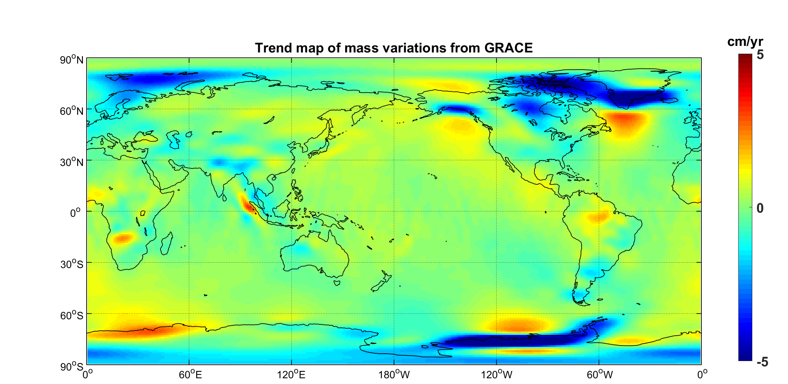

Contents
clc;clear; addpath('G:\GRACE\GLDAS_fuction'); addpath('G:\Auxiliary function'); addpath('G:\fengweiigg-GRACE_Matlab_Toolbox-61c8064\GRACE_functions'); addpath('G:\fengweiigg-GRACE_Matlab_Toolbox-61c8064\GRACE_functions\simons\'); addpath('G:\fengweiigg-GRACE_Matlab_Toolbox-61c8064'); c11cmn=[-89.5 89.5 -179.5 179.5];
处理GRACE数据 %%
%处理grace数据,批量读取数据，替换C20,C21,C22,S21,S22，替换一阶项，作残差，去条带，移除GIA效应，高斯平滑，保存为cs_gsm_csr_swenson_2002_2015_60degree % run('GRACE_Matlab_Toolbox_preprocessing_core.m'); cs_gsm=load('G:\Auxiliary function\result\GRACE\cs_gsm_csr_swenson_2002_2015_60degree.mat'); grid_gsm=load('G:\Auxiliary function\result\GRACE\grid_gsm_csr_swenson_2002_2015_60degree.mat'); cs_grace=getfield(cs_gsm,'cs_grace'); str_year=cell2mat(getfield(cs_gsm,'str_year')'); str_month=cell2mat(getfield(cs_gsm,'str_month')'); grid_grace=getfield(grid_gsm,'grid_data_grace'); % %%空间域扣除泄露误差，打开文件为cs_gsm，保存为cs_leakage_oceanremoved_swenson_0km %处理陆地数据加载ocean格网，移除海洋泄漏至陆地的信号，通常处理陆地数据，故默认类型为land addpath('G:\fengweiigg-GRACE_Matlab_Toolbox-61c8064\GRACE_data\msk_files'); run('GRACE_Matlab_Toolbox_LeakageReductionSpatial.m'); load ('G:\Auxiliary function\result\GRACE\cs_leakage_oceanremoved_swenson_0km.mat'); % % % % % % % % % % % %%球协合成（cs转为grid），打开文件为上面的cs_gsm_csr_swenson_2002_2015_60degree或cs_leakage_oceanremoved_swenson_0km（cs文件），保存为grid_data run('GRACE_Matlab_Toolbox_SHGrid.m'); load('G:\Auxiliary function\result\GRACE\grid_data.mat');%未处理泄露误差grid load('G:\Auxiliary function\result\GRACE\grid_data_leakage_removed.mat');%处理泄露误差grid % %%生成时间序列，打开文件为grid_data,保存为time_series(Time series of mass variation in XXX) run('GRACE_Matlab_Toolbox_Grid2Series.m'); load('G:\Auxiliary function\result\GRACE\time_series_amazon.mat'); % %绘制时间序列 plot(time,time_series*100,'-s'); xlabel('Year'); ylabel('Equivalent water height (cm)'); title('Mass variations in the Amazon from GRACE'); % %% Harmonic analysis %Do harmonic analysis on time series(对时间序列进行谐波分析）,input:time_series %Do harmonic analysis in the spatial domain（在空间域进行谐波分析）,input:grid_data, output：trend.mat run GRACE_Matlab_Toolbox_HarmonicAnalysis.m; %plot the trend map （Trend map of mass variation from GRACE ） load('G:\Auxiliary function\result\GRACE\trend'); gmt_grid2map(trend*100,5,'cm/yr','Trend map of mass variations from GRACE')

制作掩膜数据(mask)
% % % % % % %
clear;clc; shp_China_name='G:\区划\省.shp'; shp=shaperead(shp_China_name); %北京、天津、河北、山东、河南、安徽、江苏的边界文件（.mat文件，与bln格式相同） boundary_bj_dir='G:\Auxiliary function\result\boundary\beijing.mat'; boundary_tj_dir='G:\Auxiliary function\result\boundary\tianjin.mat'; boundary_hb_dir='G:\Auxiliary function\result\boundary\hebei.mat'; boundary_sd_dir='G:\Auxiliary function\result\boundary\shandong.mat'; boundary_hn_dir='G:\Auxiliary function\result\boundary\henan.mat'; boundary_ah_dir='G:\Auxiliary function\result\boundary\anhui.mat'; boundary_js_dir='G:\Auxiliary function\result\boundary\jiangsu.mat'; %华北平原一般通常是包括北京、天津、河北、山东、河南、安徽、江苏这7省市 %由shp文件生成mat文件,制作其对应的mask shp_beijing=shp(1); shp_tianjin=shp(2); shp_hebei=shp(3); shp_shandong=shp(16); shp_henan=shp(17); shp_anhui=shp(13); shp_jiangsu=shp(11); bj_msk=shp2mask(shp_beijing,boundary_bj_dir); tj_msk=shp2mask(shp_tianjin,boundary_tj_dir); hb_msk=shp2mask(shp_hebei,boundary_hb_dir); sd_msk=shp2mask(shp_shandong,boundary_sd_dir); hn_msk=shp2mask(shp_henan,boundary_hn_dir); ah_msk=shp2mask(shp_anhui,boundary_ah_dir); js_msk=shp2mask(shp_jiangsu,boundary_js_dir); hbpy_msk=bj_msk+tj_msk+hb_msk+sd_msk+hn_msk+ah_msk+js_msk;%制作华北平原掩膜数据(mask)并保存 save_dir_hbpymsk='G:\Auxiliary function\result\boundary\huabei.mat'; save(save_dir_hbpymsk,'hbpy_msk'); disp('save successfully'); clear;clc;
save boundary point successfully save boundary point successfully save boundary point successfully save boundary point successfully save boundary point successfully save boundary point successfully save boundary point successfully save successfully
处理GLDAS数据
%根据GLDAS计算地表水和土壤水 %% % % % % % % % % % % % % % % % %处理clm数据 run('GLDAS_1_clm_grid.m');%读取数据,grid格式 run('GLDAS_2_grid2cs.m');%grid转为cs格式 run('GLDAS_4_gaussian_filter.m');%平滑处理 run('GLDAS_5_cs2grid.m');%处理完成后转为grid格式
% % %处理MOSAIC数据 % run('GLDAS_1_mosaic_grid.m'); % run('GLDAS_2_grid2cs.m');%grid转为cs格式 % run('GLDAS_4_gaussian_filter.m');%平滑处理 % run('GLDAS_5_cs2grid.m');%处理完成后转为grid格式 % % %处理NOAH10数据 % run('GLDAS_1_noah10_grid.m'); % run('GLDAS_2_grid2cs.m');%grid转为cs格式 % run('GLDAS_4_gaussian_filter.m');%平滑处理 % run('GLDAS_5_cs2grid.m');%处理完成后转为grid格式 % %处理VIC数据 % run('GLDAS_1_vic_grid.m'); % run('GLDAS_2_grid2cs.m');%grid转为cs格式 % run('GLDAS_4_gaussian_filter.m');%平滑处理 % run('GLDAS_5_cs2grid.m');%处理完成后转为grid格式
%由GRACE,GLDAS数据计算TWS
clear;clc;
run('grace_gldas_gw.m');
Save grid_gw successfully.
绘制华北地区TWS等效水高变化图,GW水高变化图
clear;clc; hbpy_msk='G:\Auxiliary function\result\boundary\lg_msk.mat'; % amazon_bln='G:\fengweiigg-GRACE_Matlab_Toolbox-61c8064\GRACE_data\boundary_files\amazon_new.bln'; % grid_gldas='G:\Auxiliary function\result\GLDAS\CLM\grid_gaussian_clm_10_land.mat'; % gldas=load(grid_gldas); % grace=load('G:\Auxiliary function\result\GRACE\grid_data.mat');%未处理泄露误差grid gw=load('G:\Auxiliary function\result\GW\grace_gldas_gw_2002_2015.mat');%gw，cm type='mask'; % [time_series]=gmt_grid2series(grid_data,hbpy_msk,type,89.5); [time_series]=gmt_grid2series(gw.grid_gw,hbpy_msk,type,89.5); % for i=1:146 % time(i)=str2double(str_year(i,:))+str2double(str_month(i,:))/12; % end %绘制华北地区地下水变化时序图 for i=1:146 time(i)=str2double(gw.str_year(i,:))+str2double(gw.str_month(i,:))/12; end plot(time,time_series,'-s'); xlabel('年'); ylabel('等效水高(cm)'); title('华北地区地下水变化图'); grid_gw=gw.grid_gw; grid_sumgw=sum(grid_gw,3); grid_data=grid_sumgw.*lg_msk; gmt_grid2map(grid_data,max(max(grid_data)),'cm','华北地区地下水变化图'); grid=[grid_sumgw(:,181:360) grid_sumgw(:,1:180)]; gmt_grid2map(grid_sumgw,200,'cm','全球地下水变化图');
未定义函数或变量 'lg_msk'。 出错 run_script (line 146) grid_data=grid_sumgw.*lg_msk;